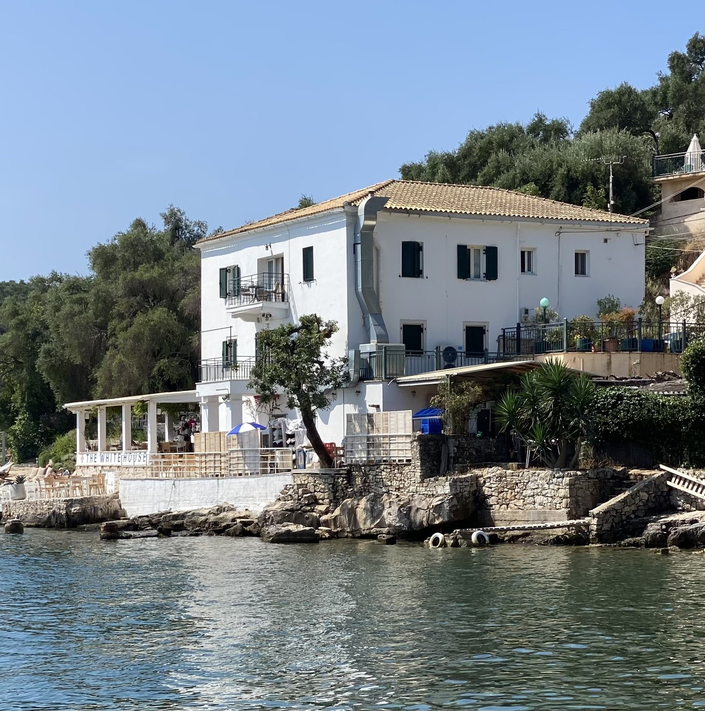
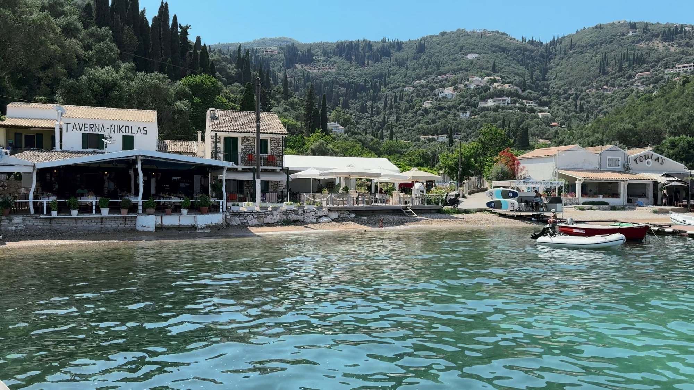
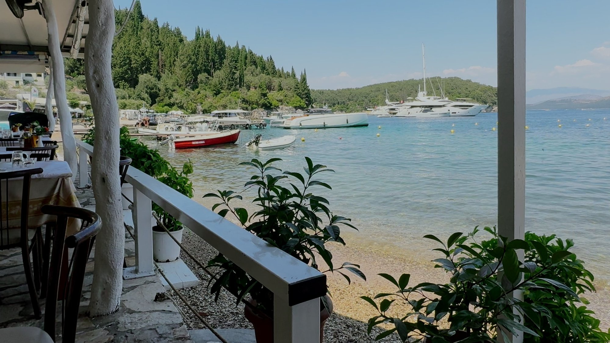
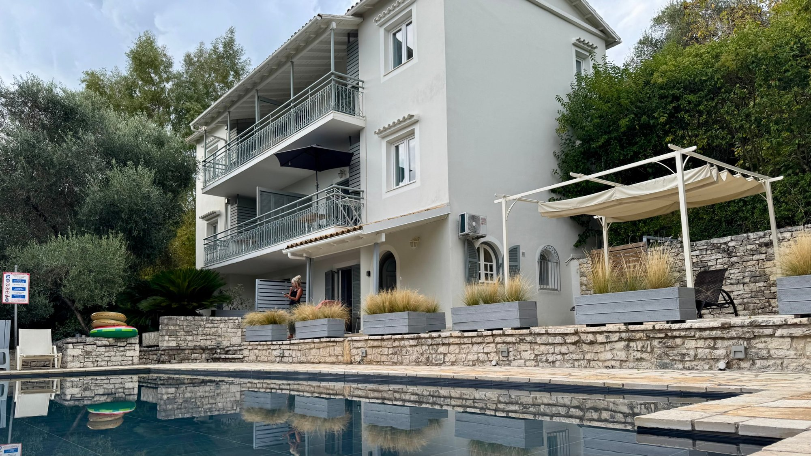
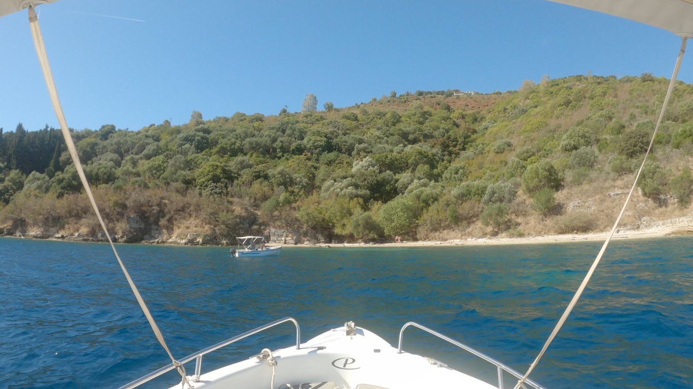
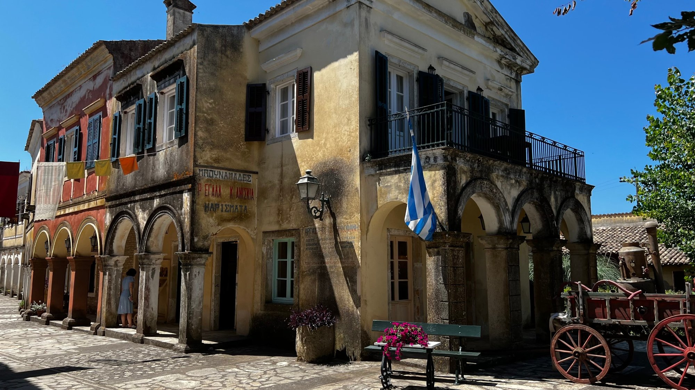

There are parts of Corfu that look as though somebody has taken a paintbrush to the landscape and then decided that green and turquoise simply weren't enough. The north-east coast is one of them.
Often referred to as the Emerald Coast, this stretch of Corfu is a rather beautiful combination of traditional fishing villages, tiny pebble beaches, expensive-looking yachts, waterfront tavernas and hillsides covered in ancient olive groves.
It's also a part of the island where the best way to explore isn't necessarily by car. In fact, some of its loveliest little bays are much easier to appreciate from the water.
We based ourselves at Agios Stefanos, on the east coast, and spent our time exploring the neighbouring villages and beaches. From boat trips and lazy waterfront lunches to discovering a famous literary landmark and a rather impressive film set, this corner of Corfu has plenty to keep you occupied.
Here are five places worth adding to your Corfu itinerary.
1. KALAMI – THE WHITE HOUSE AND THE EMERALD COAST
Kalami is one of those places that makes you wonder why you haven't been to Corfu more often. It's a beautiful horseshoe-shaped bay, backed by green hillsides and olive groves, with a lovely white-pebble beach and water so clear that you can see the bottom without having to squint.
The village sits around a sheltered bay, with Albania visible across the water. It's a particularly pretty stretch of coastline, and the surrounding landscape gives it a much more secluded feel than some of Corfu's busier resorts.
But Kalami has something else going for it. It's home to the famous White House, once the home of English writer Lawrence Durrell, who lived here with his family during the 1930s.
The house is now a waterfront restaurant, making it possible to enjoy a meal in a building with a rather interesting literary past. Not every restaurant can boast that its former residents included a famous author.

The beach is well organised, with sunbeds, umbrellas, showers and changing facilities, while the waterfront has a selection of traditional tavernas, bars and little shops.
Seeing the coast from the water
One of the best things we did during our stay was hire a small boat from Agios Stefanos and spend the day exploring this stretch of coastline.
We sailed along the coast, stopping at Agni Beach and Houhoulio Beach, dropping anchor in sheltered bays and enjoying the views from the sea rather than the land.
And what a view it was.
There is something rather special about approaching these little beaches by boat. You can find a quiet spot, drop anchor and enjoy a swim without having to worry about finding a sunbed or squeezing yourself between somebody else's beach umbrella.
We even packed a picnic. Spinach pie, crisps, Greek pastries, beer and prosecco. Frankly, it would have been difficult to improve on that menu, unless somebody had brought a chef along.
The north-east coast is particularly well suited to this sort of exploring, and if you have the opportunity to hire a boat, I would thoroughly recommend it.
2. AGNI BEACH – A LITTLE BAY WITH A BIG REPUTATION
Agni Beach is another of those little Corfiot bays that seems to have been designed specifically for people who enjoy eating lunch beside the sea.
It's a small, sheltered pebble cove, surrounded by green hills and looking out towards the Albanian coastline. The water is beautifully clear, and the setting is wonderfully Mediterranean.
Getting here by car isn't necessarily the easiest option. The road down to the bay is steep and narrow, and parking is limited. Fortunately, there is another way of arriving, which is considerably more enjoyable.
Arriving by boat
We approached Agni by boat, having hired one from our base at Agios Stefanos.
As we entered the bay, we could see the waterfront tavernas and their wooden jetties. It was already looking rather inviting.

We moored up and headed for a drink at Nikolas Traditional Taverna, one of the well-known restaurants overlooking the water.
It was a lovely spot to sit and watch the boats coming in and out. There were some seriously impressive yachts arriving, presumably preparing for an evening meal. I suspect their owners weren't relying on a picnic of spinach pie and crisps.

Agni has quite a reputation for its restaurants, with Nikolas Traditional Taverna, Toula's Gastronomy Restaurant and Taverna Agni among the best-known names. Several have their own jetties, and some even offer boat transfers for evening diners.
It's a rather clever arrangement. You can arrive by boat, enjoy a leisurely meal and avoid the rather steep drive back up the hill.
What else is there to do?
Apart from eating, Agni is a lovely place for swimming and snorkelling. The sheltered bay has clear water, and there are coastal paths through the olive groves connecting it with neighbouring beaches and villages.
You can also hire small boats locally or arrive by water taxi from nearby resorts.
3. AGIOS STEFANOS EAST – OUR LITTLE CORFU HOME
First, an important distinction. This is Agios Stefanos on the north-east/east coast of Corfu, not to be confused with the much busier tourist resort of Agios Stefanos on the north-west coast.
This Agios Stefanos is a rather different proposition.
It's an attractive horseshoe-shaped harbour where traditional fishing boats sit alongside private yachts, surrounded by waterfront tavernas, cafes and some rather impressive holiday villas climbing the hillside.
It's sometimes referred to as Kensington-on-Sea, which gives you an idea of the sort of clientele it attracts. There are certainly some expensive-looking boats in the harbour, although we managed perfectly well without owning one.
The village is around 35km from Corfu Town, with Albania sitting almost directly opposite. The immediate waterfront is fairly compact, with a narrow strip of pebbles rather than a large sandy beach.
Where we stayed
We stayed at Damianos Apartments, which was ideally located for exploring the village.

Our apartment was just a short walk from the beach and waterfront, with everything we needed for a comfortable stay. It was clean, well equipped and had the added bonus of a lovely swimming pool and outdoor space.
The property is set back in secluded grounds, with several different apartments, balconies and terraces. It made a very good base for exploring this part of the island.
Our daily ritual
One of the things we particularly enjoyed about Agios Stefanos was the waterfront.
The tavernas and bars are all positioned along the water, and you're genuinely spoilt for choice when it comes to finding somewhere to sit and watch the world go by.
We enjoyed lunch at Eucalyptus Taverna, but it was the little Damianos Lounge Café and Cocktail Bar that became part of our daily routine.
Iced chocolate and coffee in the morning, followed by beer and sangria in the evening. It's a hard life, but somebody has to do it.
We could sit there watching the boats arrive, people coming and going and the general business of harbour life unfolding in front of us.
And then there's the local shop, which serves one of the best spinach pies on the island. We developed something of a weakness for these during our stay.
Exploring further afield
Agios Stefanos is also a good base for exploring the surrounding coastline.
You can hire a small motorboat directly from the harbour and visit some of the more secluded beaches and bays. Kerasia Beach and Avlaki Beach are nearby, while the Erimitis coastal trails offer some lovely walking through the olive groves and countryside.
There are also plenty of opportunities to explore neighbouring Kassiopi.
Just be aware that parking is limited in high summer, and the hillsides around the village are considerably steeper than the relatively flat waterfront.
4. KOULOURA AND HOUHOULIO BEACH – A LITTLE CORNER OF CORFU TO DISCOVER
If you're looking for somewhere that feels a little less developed, Kouloura and neighbouring Houhoulio Beach are well worth seeking out.
Kouloura is a tiny traditional fishing harbour, famous for its distinctive horseshoe shape. The name itself relates to its circular appearance, and it's one of those little places that looks particularly attractive when viewed from the water.
Just around the corner is Houhoulio Beach, sometimes spelt Xouxoulio, a small pebble cove surrounded by trees.
This isn't a beach with rows of sunbeds, beach bars and somebody trying to sell you an inflatable flamingo. It's much more natural and understated.
The narrow strip of pebbles is backed by eucalyptus and pine trees, providing welcome shade, while the shallow, clear water makes it a lovely spot for swimming and snorkelling.
Our boat trip discovery

We visited Houhoulio as part of our boat trip from Agios Stefanos.
It was one of several stops along this beautiful stretch of coastline, and arriving by boat made it particularly easy to appreciate just how pretty these little coves are.
We dropped anchor, enjoyed the surroundings and had the opportunity to explore the beach.
There are no facilities here, so don't expect sunbeds, umbrellas or a beachside taverna. You'll need to bring your own water, food and anything else you might need. Sea shoes are also a sensible idea, as the pebbles and occasional sea urchins can make getting into the water less comfortable than it looks.
If you're arriving on foot, you can reach Houhoulio from Kalami along a scenic coastal path, which takes approximately 15 minutes.
A little harbour nearby
Back at Kouloura, you'll find Taverna Kouloura sitting beside the fishing harbour. We didn't eat there, although its position beside the water is certainly appealing.
It's the sort of place where the setting does much of the talking.
The surrounding coastline is also steeped in history, with connections to the Durrell family and some beautiful old buildings and villas.
5. DANILIA VILLAGE – STEPPING INTO THE WORLD OF THE DURRELLS
Danilia Village is a little different from the other places we've mentioned because it isn't actually on the north-east coast. However, if you're exploring this part of Corfu, it's an interesting inland detour and one we think is well worth including in your itinerary.
If you've watched the ITV series The Durrells, you'll probably recognise it.
Danilia is a beautifully reconstructed traditional Corfiot village, designed to recreate the atmosphere of 1930s Corfu. It was built in the 1970s by the Boua family and has since become a film and television location.
As well as featuring in The Durrells, the village has appeared in the James Bond film For Your Eyes Only and My Big Fat Greek Wedding 3.
So, if you fancy wandering around somewhere that has appeared on television and in the movies, this is your opportunity.
A village built for the cameras

The entire place is effectively a meticulously created film set, but that doesn't make it any less interesting.
You'll find narrow cobbled streets, traditional shopfronts, two village squares, a church, a traditional kafeneion and a collection of old-fashioned buildings that recreate village life from another era.
The main square is particularly recognisable from The Durrells, with its traditional cafe and village well.
There's also a replica Church of St George, traditional shops representing old-fashioned trades and a museum section displaying historic olive presses and other tools associated with traditional Corfiot life.
Visiting Danilia
Danilia is approximately 15 minutes from Corfu Town, near Kontokali and Gouvia, so it's relatively easy to combine with a visit to other parts of the island.
Opening arrangements are seasonal, generally running from May to October, with more limited availability outside the main tourist season. Entry prices and tour arrangements can vary, so check with the official Danilia Village website before making the journey.
FINAL THOUGHTS – WHY THE NORTH EAST COAST OF CORFU IS WORTH EXPLORING
The north-east coast of Corfu is one of those places where you really shouldn't spend all your time in the car.
Yes, there are lovely villages to visit, waterfront restaurants to discover and beaches to explore, but the real magic is in the coastline itself.
Hire a small boat if you can. Stop at the little coves, swim in the ridiculously clear water, find somewhere sheltered to drop anchor and enjoy a picnic. You don't need a superyacht to enjoy this part of Corfu, although there are plenty around to make you feel slightly inadequate.
Agios Stefanos made an excellent base for us, with Kalami, Agni, Kouloura and some wonderful little beaches all within easy reach.
It's a beautiful part of the island, with a more relaxed, upmarket feel and some of the prettiest coastal scenery you'll find anywhere in Corfu.
And if you can manage a spinach pie, an iced chocolate and a glass of sangria along the way, so much the better.